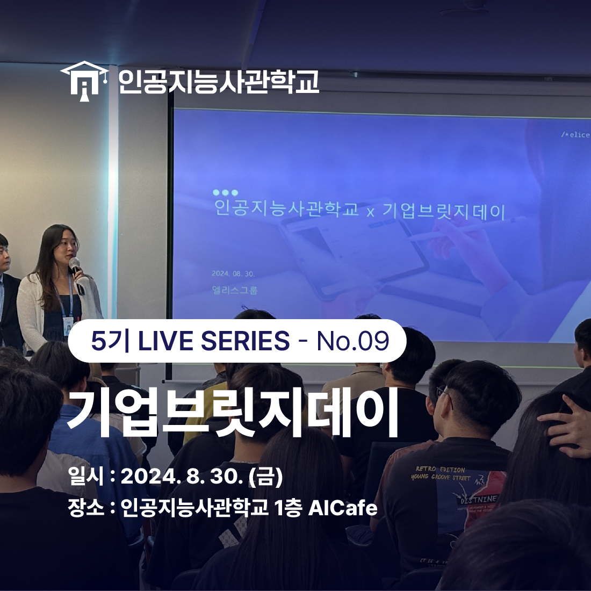
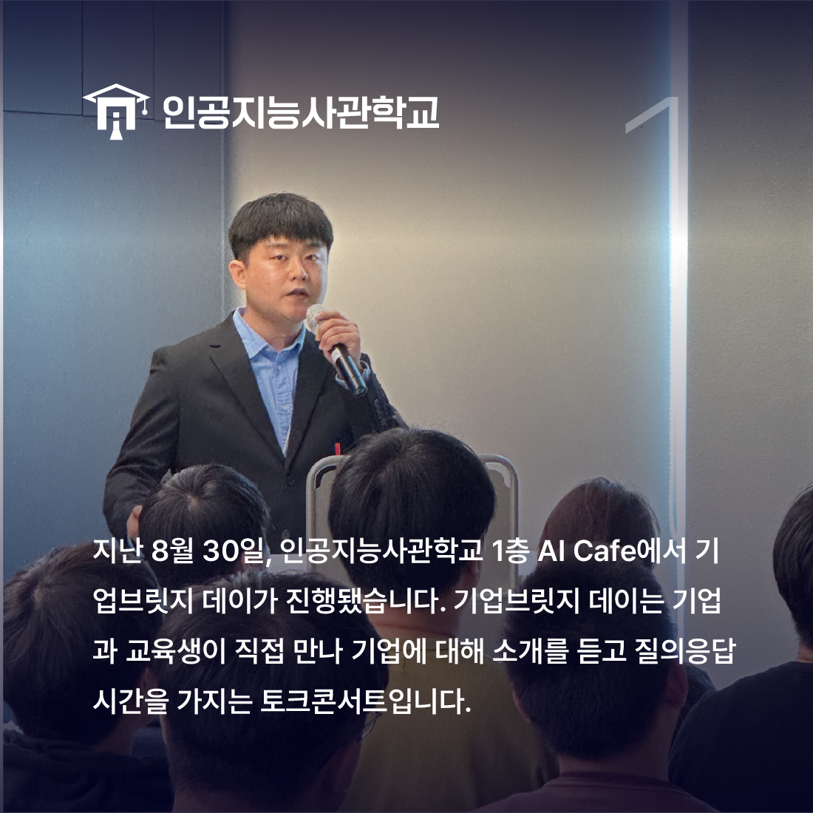
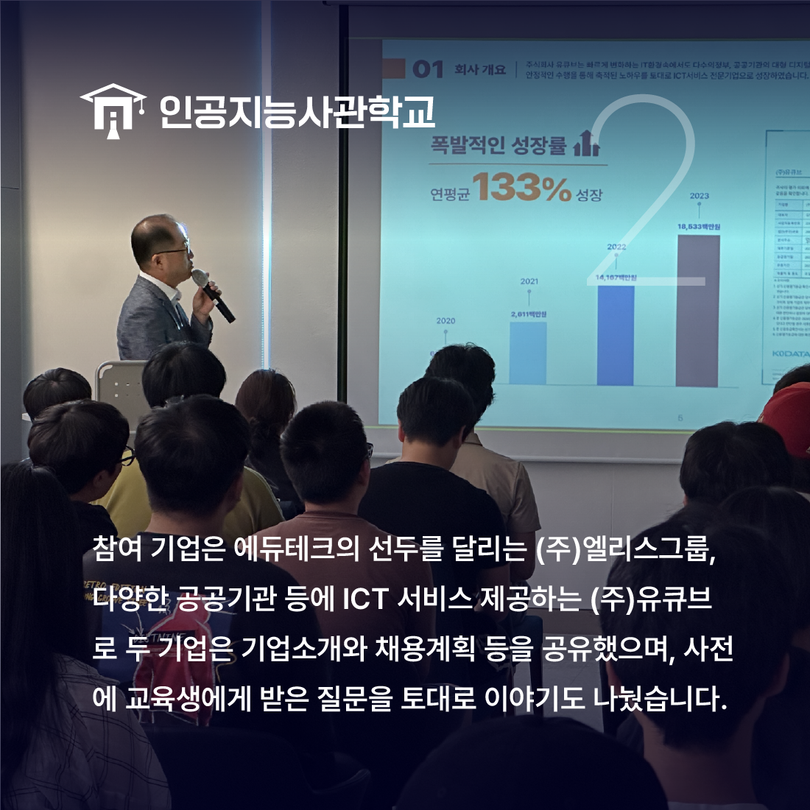
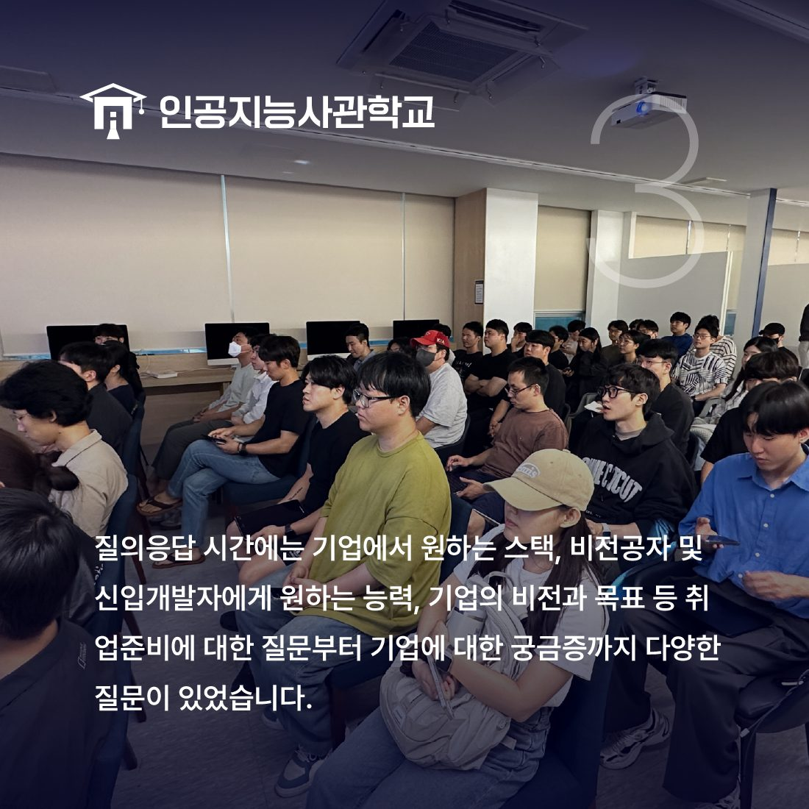
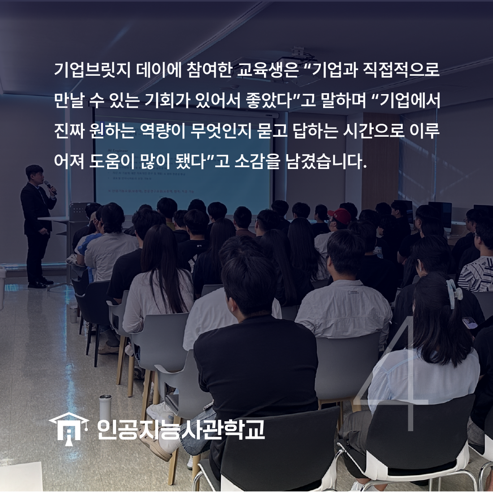

안녕하세요! 인공지능사관학교입니다. 😆

지난 8월 30일, 인공지능사관학교 1층 AI Cafe에서
<AI기업브릿지 데이>가 진행됐습니다.

<기업브릿지데이>는 기업과 교육생이 직접 만나
기업소개, 채용계획 및 질의응답을 하는
토크콘서트로 진행됐습니다.

인공지능사관학교 기업브릿지데이에 참여한 기업은
(주)엘리스그룹, (주)유큐브로
두 기업 모두 탄탄한 경력을 가지고 있습니다!

질의응답은 교육생들에게 받은 사전 질문과
현장에서 받은 추가 질문으로 진행됐는데요.
기업에서 원하는 스택은 무엇인지,
비전공자 및 신입 개발자에게 원하는 능력은 무엇인지,
기업의 비전과 목표는 무엇인지까지
다양한 질문이 나왔습니다.

기업브릿지데이에 참여한 교육생은 "기업과
직접 만날 수 있는 기회가 생겨서 좋았다"고 말하며
"기업에서 원하는 인재상에 대해 알게 됐다"고 소감을 남겼습니다.